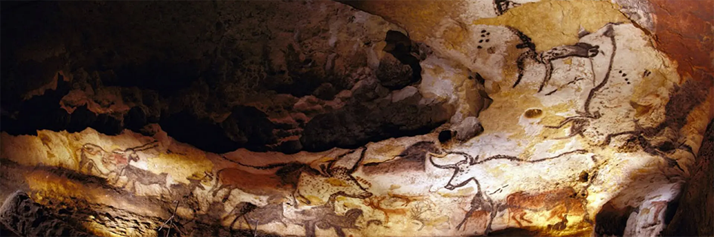
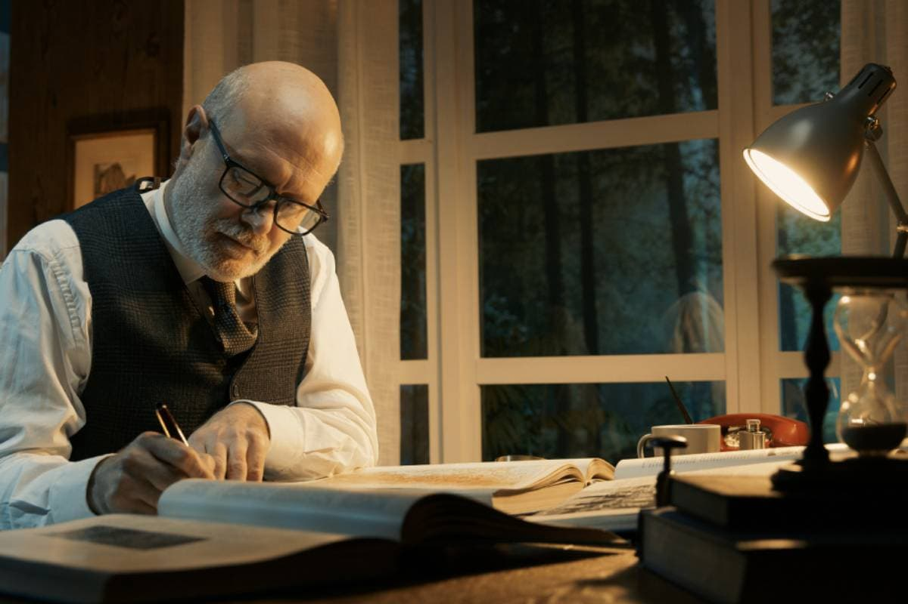

Creativity
Original ideas emerge from lived experience, curiosity, storytelling, and culture.

Supporting artists, designers, photographers, writers, filmmakers, musicians, and creative professionals in the age of AI.
We advocate for artists, designers, photographers, filmmakers, musicians, writers, and other professionals whose work depends on human creativity, judgment, expertise, and meaningful personal contribution.
HumanMade promotes ethical AI adoption, transparency, creator rights, and the enduring value of human creativity, judgment, expertise, and meaningful human work.
AI technology is rapidly transforming traditionally human-centered fields. The threat of large-scale job losses is real, and as adoption accelerates, professionals across creative industries are already describing how artificial intelligence is affecting their work and livelihoods.
Visual effects artists, animators, and storyboard professionals report shrinking opportunities as studios introduce AI-powered production tools.
Read Story →Voice actors push back against AI-generated dubbing systems that threaten jobs and cultural identity.
Read Story →
Freelance writers describe losing business as clients increasingly replace paid work with AI-generated content.
Read Story →Professionals discuss how image generators are changing client expectations and creative work.
Read Story →People provide context, accountability, ethical reasoning, and decision-making that cannot be reduced to prediction. Human judgment helps organizations understand consequences, balance competing priorities, and make choices that reflect real human values.
Original ideas emerge from lived experience, curiosity, storytelling, and culture.
Trust, collaboration, leadership, communication, and empathy remain deeply human skills.
Human expertise helps identify mistakes, bias, ethical concerns, and real-world impacts.
Of creators believe the final creative decision should remain with people.
Source →Copyright, attribution, and consent remain major concerns for creative professionals.
Learn More →Organizations need responsible AI frameworks that preserve meaningful human work and oversight.
Learn More →Whether you're a creative professional, employer, educator, student, or advocate, there are practical ways to support meaningful human work.
Career guidance, grants, training, networking opportunities, and professional support.
Explore Resources →Guidance for employers and organizations implementing AI responsibly.
Learn More →Learn how to discuss transparency, accountability, workplace impacts, and responsible AI adoption.
Learn More →Learn about copyright, licensing, attribution, contracts, and advocacy.
Learn More →Reports, studies, and organizations supporting meaningful human work and creator protections.
Learn More →Help promote ethical AI adoption, creator rights, and future opportunities for meaningful human-centered work.
Get Involved →Help protect meaningful creative work, support ethical AI adoption, and ensure human creativity remains visible for future generations.
Get Involved